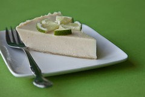
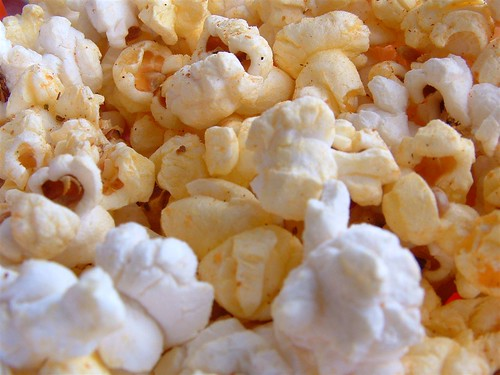

LISTS
Main Heading
Key Lime Pie
Key limepie is delicious and easy to make. I even use limes from the tree in my backyard. If you don't have a lime tree that's okay. Most grocery stores sell them year round.

"key lime pie" by mackenziephoto is licensed under CC BY-NC-ND 2.0
Ingredients: Graham Cracker Crust
- 1/3 of a 1-pound box graham crackers
- 5 tablespoons melted unsalted butter
- 1/3 cup sugar
Ingredients: Filling
- 3 egg yolks
- 2 teaspoons lime zest
- 1 (14-ounce) can sweetened condensed milk
- 2/3 cup freshly squeezed Key lime juice, or store bought
Directions
- For the graham cracker crust: Preheat the oven to 350 degrees F.
- Break up the graham crackers; place in a food processor and process to crumbs. If you don't have a food processor, place the crackers in a large plastic bag; seal and then crush the crackers with a rolling pin. Add the melted butter and sugar and pulse or stir until combined. Press the mixture into the bottom and side of a pie pan, forming a neat border around the edge. Bake the crust until set and golden, 8 minutes. Set aside on a wire rack; leave the oven on.
- For the filling: Meanwhile, in an electric mixer with the wire whisk attachment, beat the egg yolks and lime zest at high speed until very fluffy, about 5 minutes. Gradually add the condensed milk and continue to beat until thick, 3 or 4 minutes longer. Lower the mixer speed and slowly add the lime juice, mixing just until combined, no longer. Pour the mixture into the crust. Bake for 10 minutes, or until the filling has just set. Cool on a wire rack, then refrigerate. Freeze for 15 to 20 minutes before serving.
- For the topping: Whip the cream and the confectioners' sugar until nearly stiff. Cut the pie into wedges and serve very cold, topping each wedge with a large dollop of whipped cream.
PERFECT POPCORN
Popcorn is a delicious and healthy snack (just don't add too much butter). You'll definitely want to make this for your next movie night.

"DSCF0010" by ruben782 is licensed under CC BY-NC-ND 2.0
Ingredients
- 3 tablespoons peanut oil
- 3 ounces popcorn kernels, approximately 1/2 cup
- 1/2 teaspoon popcorn salt
- 3 tablespoons unsalted butter
Directions
- Place the oil, popcorn and salt in a large, 6-quart, metal mixing bowl. Cover with heavy-duty aluminum foil and poke 10 slits in the top with a knife.
- Place the bowl over medium heat and shake constantly using a pair of tongs to hold the bowl. Continue shaking until the popcorn finishes popping, approximately 3 minutes.
- Remove the bowl from the heat and carefully remove the foil. Stir in any salt that is on the side of the bowl.
- Melt the butter in the microwave. Slowly drizzle over the popcorn, while spinning the bowl. Serve immediately.